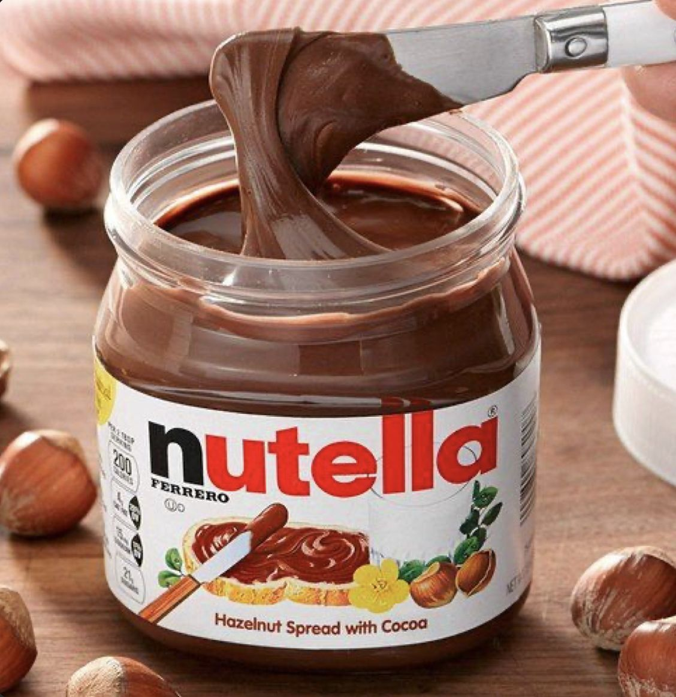

Compre as avelã já torradas e descascadas, ou torre elas em temperatura de 160°C a 170°C por 8 a 12 minutos, você vai saber que já está bom quando a pele estiver soltando mais fácil, a cada 5 minutos tire ela da airfryer e vá mexendo e coloque ela novamente para assar, faça esse processo até a avelã estar pronta, ficando levemente douradas e soltam aroma.
Retire a pele: coloque ainda quentes num pano limpo e esfregue bem.
Faça a pasta de avelã: coloque no processador potente e bata por 5 a 10 minutos, raspando as laterais. Vai virar uma pasta cremosa, essa parte tem que ter paciência mesmo
Derreta o chocolate em banho-mador, junte o chocolate derretido, cacau, açúcar, baunilha, sal e o leite quente aos poucos para não perder a consistência. Bata até ficar bem liso. Ajuste textura: se ficar muito grosso, adicione um pouquinho mais de leite. Passe para pote de vidro.
